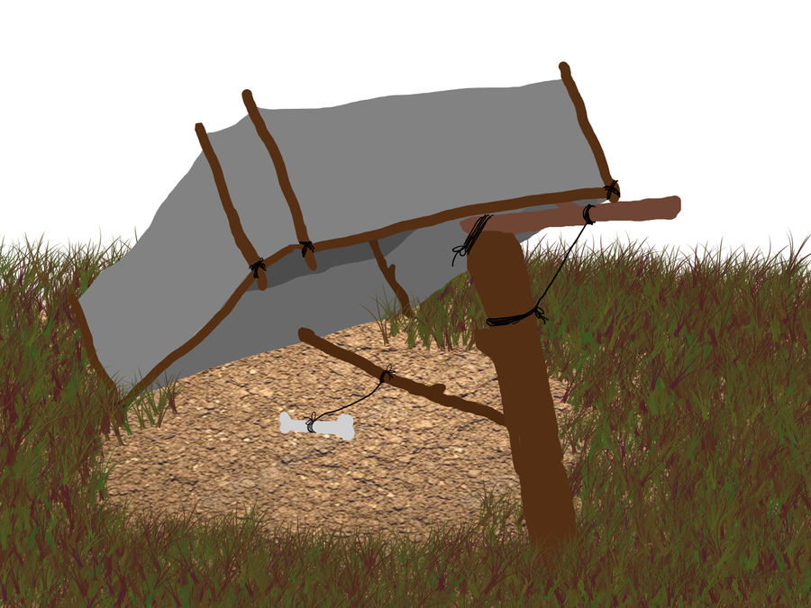
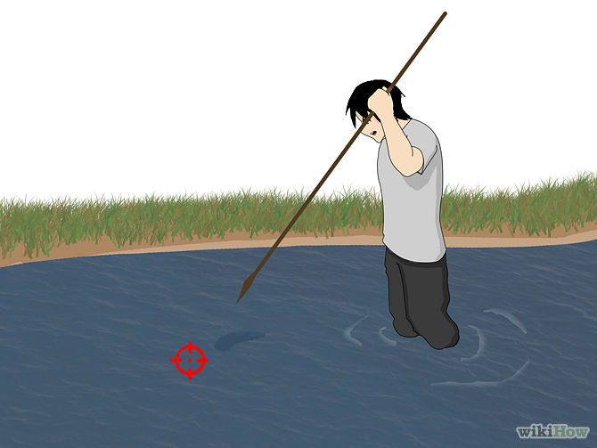
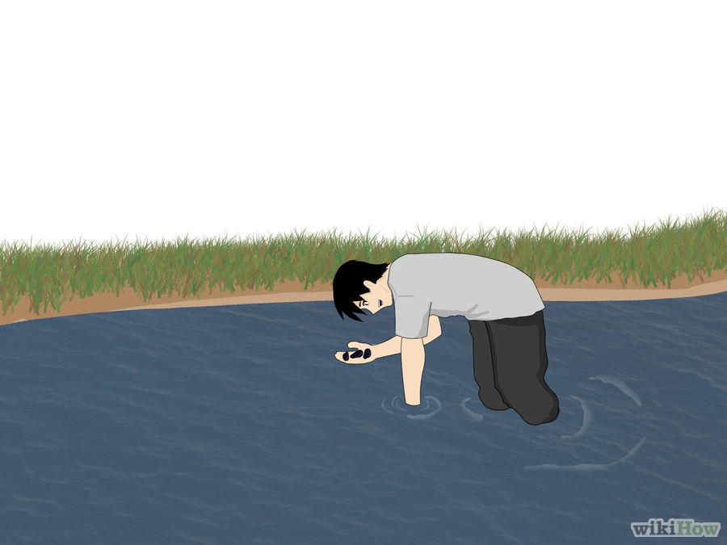
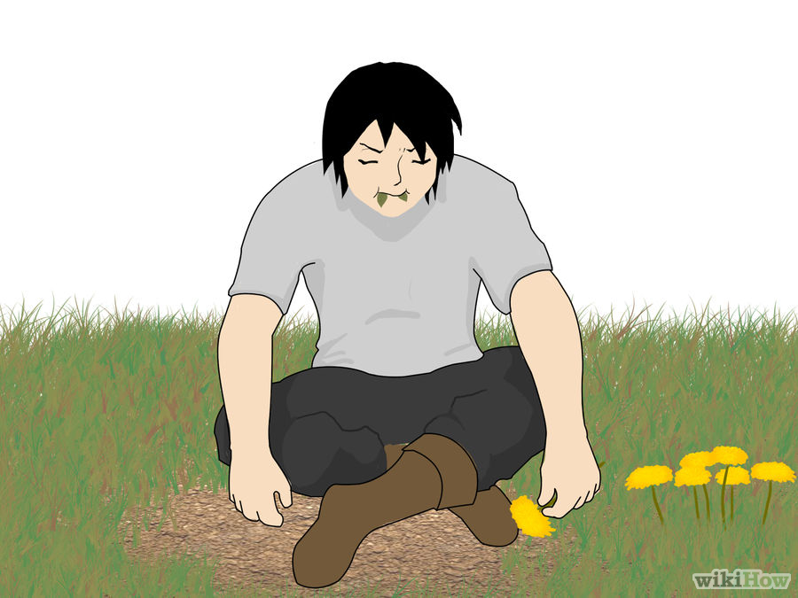

3. ΔΙΑΤΡΟΦΗ
1. Κάντε ένα αυτοσχέδιο κυνηγητικό μαχαίρι. Πάρτε ένα απλό κομμάτι ξύλο και χτυπήστε το επανειλλημένα με μια πλατιά πέτρα, μέχρι να ακονιστεί το ξύλο. Κάντε το όπως θα το κάνετε με ένα οποιοδήποτε μόνο που αυτή την φορά χρησιμοποιείστε μια πέτρα ως λίμα. Μπορείτε κάλλιστα να χρησιμοποιήσετε μια πέτρα αντί για ξύλο την οποία θα την ακονίσετε με μια άλλη πέτρα.
2. Φτιάξτε μια παγίδα εάν αδυνατείτε να βγείτε για κυνήγι. Το είδος της παγίδας στην εικόνα παρακάτω ονομάζεται δολωμένη παγίδα και βασίζεται σε μια παγίδα που αναγκάζει το θήραμα να περάσει το κεφάλι του μέσα από μια δολωμένη παγίδα σχήματος γ. Ένα κλαρί ιτιάς, ξυσμένο και στα δυο άκρα, λυγίζεται σε σχήμα αψίδας (ημικυκλίου) και στερεώνεται στο έδαφος. Η θηλιά στερεώνεται στο άκρο μια θηλιάς με ισορροπούντες πασσάλους. Μια δολωμένη βέργα τοποθετείται κατά τέτοιο τρόπο, ώστε ο πάσσαλοςτης θηλιάς, που προσαρμόζεται στην αψίδα, να μπορεί να στηρίζεται στην βέργα του δολώματος. Τοποθετήστε δυο μέγάλους πασσάλους από κορμούς δέντρου ή μια σειρά από πέτρες που να σχηματίζουν ένα εμπόδιο και στις δυο πλευρές, αναγκάζοντας έτσι το θήραμα να περάσει το κεφάλι του από την θηλιά πριν κατορθώσει να αρπάξει το δόλωμα. Όποιο θήραμα κατορθώσει να αρπάξει το δόλωμα, ενεργοποιείται αμέσως η θηλιά. Η συγκεκριμένη παγίδα θεωρείται από τις πλέον αξιόπιστες. Οι θηλιές και οι παγίδες αποτελούν ένα πολύ καλύτερο εναλλακτικό μέσο από το κυνήγι και τις ενέδρες, δεδομένου ότι απαιτούν λιγότερη φυσική προσπάθεια και λιγότερο χρόνο αναμονής. Μια καλά κατασκευασμένη και σωστά τοποθετημένη θηλιά ή παγίδα είναι αποτελεσματική καθ' όλη τη διάρκεια του 24ώρου, χωρίς την ανάγκη συνεχούς επιτήρησης. Η μέθοδος αυτή εγγυάται ένα οικονομικό γεύμα υπό την έννοια της προσπάθειας για επιβίωση. Αρχίστε με την παγίδευση μικρών θηραμάτων, διότι παγιδεύονται, μεταφέρονται και ετοιμάζονται ευκολότερα.
Τοποθετείτε πάντοτε μερικές θηλιές, αλλά τηρείτε κάποια απόσταση μεταξύ των, διότι ένα ζωό που παγιδεύεται από μια θηλιά θα δημιουργήσει αρκετό θόρυβο που θα θέσει σε συναγερμό άλλα ζώα για το ενδέχομενο κινδύνου. Βεβαιωθείτε ότι όλες οι τοποθετημένες θηλιές ελέγχονται σε καθημερινή βάση - το παγιδευμένο θήραμα μπορεί να είναι το επόμενο γεύμα σας, αλλά δεν υπάρχει λόγος να το αφήνετε να υποφέρει άσκοπα. Αν έχετε επιτυχία με οποιαδήποτε από τις θηλιές που τοποθετήσατε, μαζέψτε το ζώο,σκοτώστε το αν είναι ανάγκη, και τοποθετήστε πάλι τις θηλιές την επόμενη μερά.
|  | Εάν αποφασίσετε να πάτε για κυνήγι δοκιμάστε το ψάρεμα πρώτα. Καθώς βρίσκεστε μέσα στο νερό, όταν εντοπίσετε κάποιο ψάρι μην κάνετε κάποια απότομη κίνηση. Οι δονήσεις που θα προκαλέσετε θα το τρομάξουν και θα απομακρυνθεί αμέσως. Επίσης να έχετε υπόψην σας πως επειδή το φως διαθλάται μέσα στο νερό τα αντικείμενα εμφανίζονται πιο πίσω από ότι πραγματικά είναι, οπότε να σημαδεύεται λίγο πιο μπροστά από τον στόχο σας. |
|  | Επίσης τα ρυάκια και οι λιμνούλες είναι γεμάτες από τροφή αν αποτύχετε να πιάσετε κάποιο ψάρι με την προηγούμενη μέθοδο. Μύδια, στρείδια και βατράχια είναι οι πιο συνηθισμένες επιλογές. |
|  | Τέλος, αν αποτύχετε με το ψαρέμα τελείως ή δεν υπάρχει κάποια πηγή νερού κοντά, μπορείτε να καταφύγετε στην αναζήτηση φυτών και φρούτων ως τροφή. Τα μανιτάρια είναι μια καλή επιλογή αλλά θα πρέπει να είστε ιδιαίτερα προσεκτικοί καθώς ενδέχεται να είναι δηλητηριώδη. Υπόψην ότι όλα τα φυτά και τα φύλλα τους πρέπει να πλένονται σε γλυκό νερό, πριν καταναλωθούν. Μερικά από αυτά μπορεί να καταναλώνονται ωμά, είναι γενικά πιο ασφαλές να βράζουμε όλες τις τροφές. |